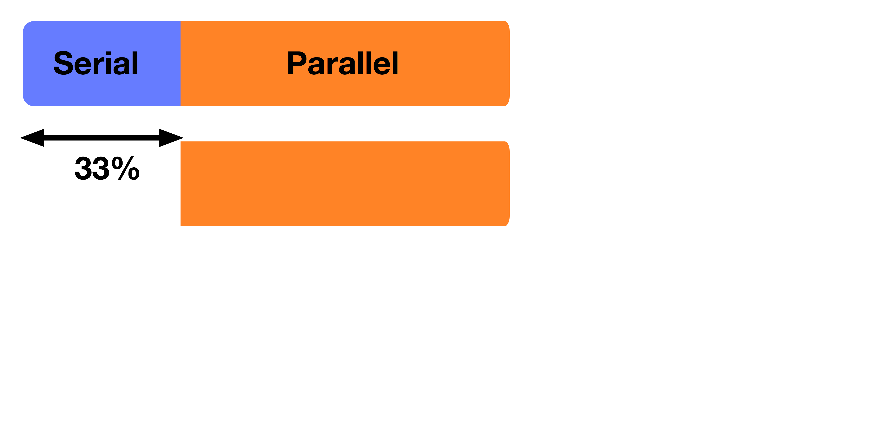
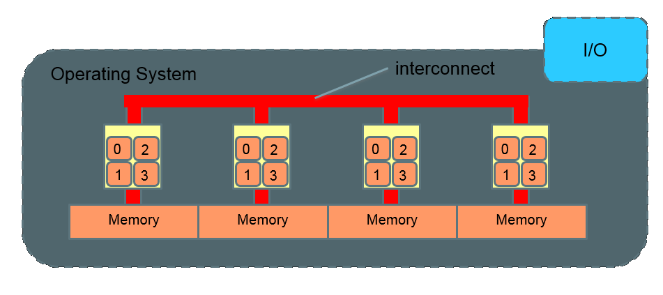
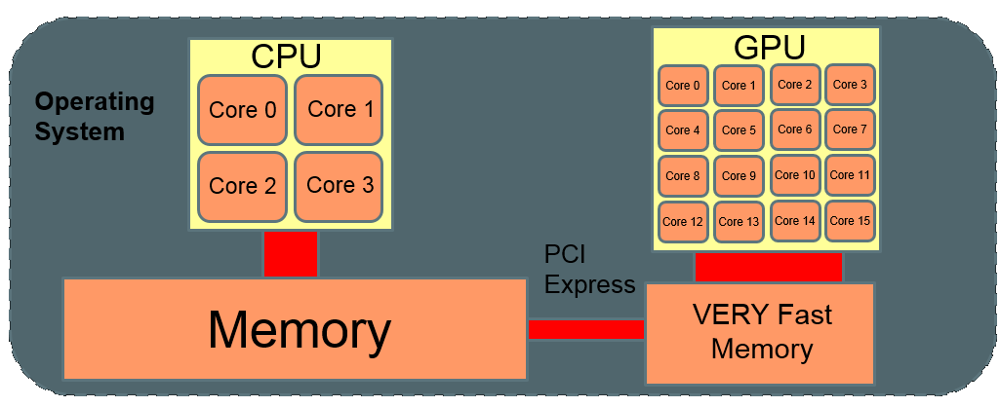
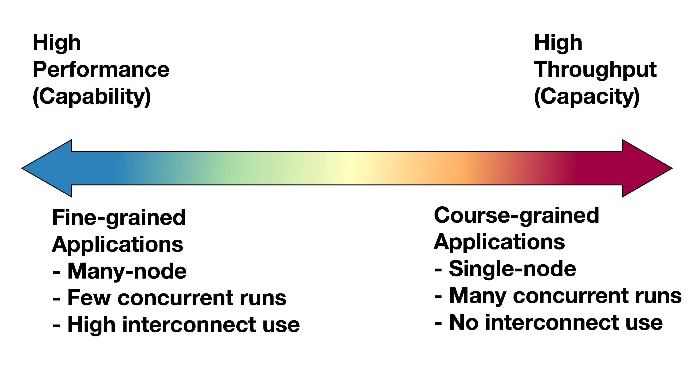

Close
Close

HPC and HTC Concepts
Key Concepts
High Performance Computing (HPC)
High Throughput Computing (HTC)
AKA "Supercomputing"
The Computer

Actual Rackable Server

Faster computing
Reduce time to result
Increase accuracy
Increase throughput
Faster computing
Pressure from computing requirements
Pressure from physics
Pressure from Physics
Physics limits GHz speed
Heat and power-draw increase super-linearly with speed
Pressure from computing requirements
Bottlenecks everywhere
Limits of RAM
Parallelism
Serial Process:
- A process in which its sub-processes happen sequentially in time.
- Only one sub-process is active at any given time.
Parallel Process:
- Process in which multiple sub-processes can be active simultaneously.

Parallelism
Serial Process:
- Speed depends only on the rate at which each sub-process will occur (e.g. processing unit clock speed).
Parallel Process:
- Speed depends on execution rate of each sub-process AND how many sub-processes can be made to occur simultaneously.
Parallel for Capacity
Example: Searching database of web-sites for some text (i.e. Google)
Searching sequentially through large volumes of text too time-consuming.
- Multiple servers hold different pages.
- Each server can report the result of each individual search.
- The more servers you add the quicker the search is.
Parallel for Capability
Example: Large scale weather simulation
Detailed description for atmosphere too large to run on today's desktop or server PCs.
- Multiple servers are needed to hold all grid data in memory.
- Servers need to quickly communicate to synchronise work over entire grid
- Communication between servers can become a bottleneck.

Parallelism
All computers today are designed for parallel execution
But...
Not all computation can be done in parallel!
Amdahl's Law
1 Processor

Amdahl's Law
2 Processors

Amdahl's Law
10 Processors

Amdahl's Law
- Amdahl's law will always be a limiting factor
$\frac{1}{\left(1-P\right)+\frac{P}{N}}$
- Some applications need to be re-written, algorithms re-thought to harness ever more parallel machines.
Amdahl's Law

- If 95% of the program can be parallelized, the theoretical maximum speedup using parallel computing would be 20x, no matter how many processors are used.
There are many parallel paradigms
Processor farms, pipelining, divide/conquer, geometric decomposition, cellular automata, algorithmic parallelism
- From a systems perspective:
- Shared memory
- Message passing
SMP (Symmetric Multi-Processing)

SMP (Symmetric Multi-Processing)

Beowulf Cluster

Infiniband Cluster

NUMA (Non-Uniform Memory Access)

Interconnect comparisons
| Interconnect | Typical MPI latency (microseconds) | Typical bandwidth (MB/s) |
|---|---|---|
| 1Gbs Ethernet | 60-90 | 90 |
| 10Gbs Ethernet | 12-20 | 800 |
| Infiniband | 2-4 | 250-1200 |
| NUMALink 4 | ~1 | 3000 |
| QPI | ~0.5 | 20000 |
GPU accelerator

Only a subset of problems can be optimised
Not all problems can be parallelised
Not all parallel problems can be ported to accelerators

In summary
Developments in CPU architecture still continue: Moore’s law still valid
Improvements to CPU architecture consist of increasing internal parallelism: hyper-threading, wider SIMD units, more cores per chip
Accelerators are bringing more computing cycles to the table (albeit of a special type).
And that is just the compute side of the story
Data storage and Network infrastructure need to keep up with computation and other data producing technologies...
upgrading network infrastructure
re-thinking data storage
- SSD’s
- parallel file systems
- Multi-tiered storage
- Map-Reduce data platforms
Supercomputing
Used efficiently, Supercomputers let you get more done faster.
They can be useful for a large number of types of work.
Applications

The Cluster
Overview

The Node
Compute Node
- Just computes - little else
- Private IP address - no user access
Login Node
- User login
- Interaction with job scheduler
- Public IP address - connects to external network
Generic Software stack

Real applications
FEA - Finite Element Analysis
- The simulation of hard physical materials, e.g. metal, plastic
- Crash test, product design, suitability for purpose
- Examples: MSC Nastran, Ansys, LS-Dyna, Abaqus, ESI PAMCrash, Radioss
CFD - Computational Fluid Dynamics
- The simulation of soft physical materials, gases and fluids
- Engine design, airflow, oil reservoir modelling
- Examples: Fluent, Star-CD, CFX
Real applications
Geophysical Sciences
- Seismic Imaging - taking echo traces and building a picture of the sub-earth geology
- Reservoir Simulation - CFD specific to oil asset management
- Examples: Omega, Landmark VIP and Pro/Max, Geoquest Eclipse
Life Sciences
- Understanding the living world - genome matching, protein folding, drug design, bioinformatics, organic chemistry
- Examples: BLAST, Gaussian, LAMMPS, Trinity, Amber, NAMD
Real applications
High Energy Physics
- Understanding the atomic and sub-atomic world
- Software from Fermi-Lab or CERN, or home-grown
Financial Modelling
- Meeting internal and external financial targets particularly regarding investment positions
- VaR - Value at Risk - assessing the impact of economic and political factors on the bank’s investment portfolio
- Trader Risk Analysis - what is the risk on a trader’s position, a group of traders
Operating system
The vast majority of Clusters in the world use some flavour of Unix or Linux for their OS.
The most common form of interaction with these systems is a "shell" or "command line".
(Which we are going to learn about using Legion’s Login nodes.)
Operating system
Clusters are very frequently used as a shared facility.
As such, work needs to be scheduled via a batch system.
Jobs are queued and prioritised based on requested resources.
(These are the focus of tomorrow’s session.)